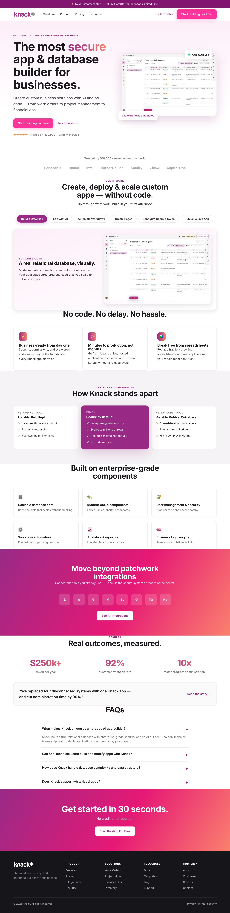
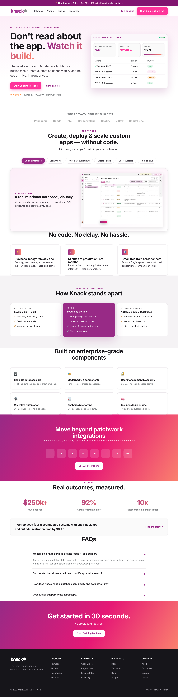

stardust
knack.com · redesign
✦ Three directions, all brand-faithful — palette and Inter kept, the 5 tensions fixed in each.
They differ in their bet: A plays it safe, B amplifies the magenta, C makes motion the identity. My pick is C.
Each card shows what's fixed and the "what if" behind it. Open any to iterate.
seed a3f7c9 · md5(knack·06-25)
Try "a calmer option" or "go bolder than C".
directions3 variants · brand-faithful
click to iterate


★ recommended
